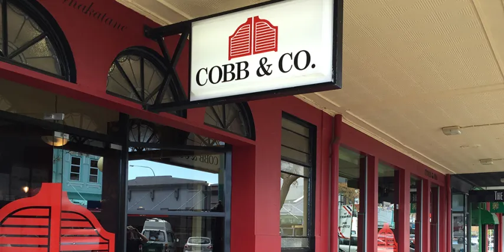

About Porirua
Porirua is a vibrant city in the Wellington region of New Zealand,
known for its beautiful harbour, diverse communities, and rich cultural heritage.
It is home to many parks, beaches, and outdoor spaces that make it a great place for
families and visitors to explore.
Porirua has strong connections to Māori history and culture, particularly through local iwi
and also known for its welcoming community, thriving arts scene, and popular attractions.
Restaurants in Porirua
Tuktuk Thai

Tuk Tuk Thai Restaurant is a popular local restaurant that offers authentic
Thai cuisine in a warm and welcoming atmosphere. Known for its flavorful curries,
stir-fries, and traditional Thai dishes,
it is a favourite dining spot for both locals and visitors in Porirua.
Diwan Restaurant

Diwan Restaurant & Takeaways is a popular halal restaurant in Porirua
that specializes in authentic Syrian and Middle Eastern cuisine.
Known for its freshly prepared dishes, generous portions, and traditional flavours,
the restaurant offers a welcoming atmosphere where customers can enjoy favourites
such as shawarma, kebabs, falafel, and other Syrian specialties.
Cobb & Co.

Cobb & Co. Porirua is a family-friendly restaurant that has been a
favourite dining destination for many New Zealanders.
Known for its welcoming atmosphere and extensive menu,
it offers a variety of meals ranging from classic Kiwi favourites to steaks,
seafood, burgers, and desserts.